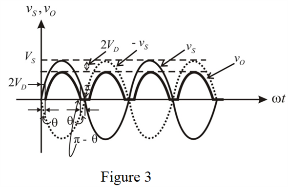
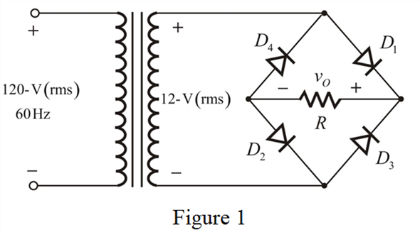
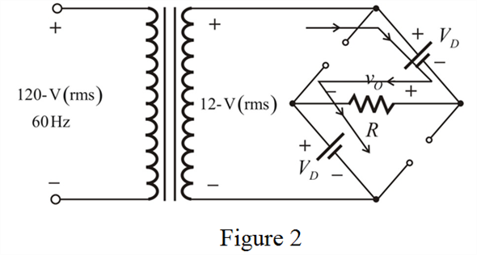
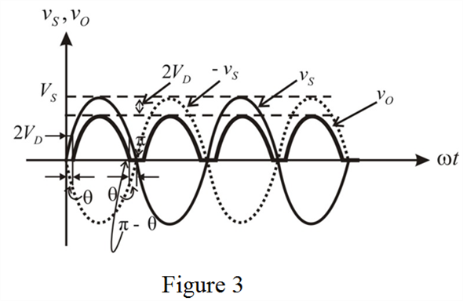

The input to the Full -wave bridge rectifier is,

The diodes will conduct during both the half cycles. The diodes  conduct for positive half cycle and the diodes conduct for negative half cycle.
conduct for positive half cycle and the diodes conduct for negative half cycle.
Draw the input/output waveforms together.

Calculate the secondary voltage for a step-down transformer.
Draw the modified circuit diagram.

Redraw the circuit for positive input half cycle.

The peak voltage of the input is,
Calculate the peak voltage of the rectified output.
Therefore, the peak value of the output voltage, is .
The input to the Full -wave bridge rectifier is,
The diodes will conduct during both the half cycles. The diodes conduct for positive half cycle and the diodes conduct for negative half cycle.
Draw the input/output waveforms together.

From the waveform,  is the angle at which the input signal reaches and the diode starts conducting. The diode conduction terminates at
is the angle at which the input signal reaches and the diode starts conducting. The diode conduction terminates at  and the hence the total conduction angle is
and the hence the total conduction angle is  or
or  .
.
The expression for the diode voltage is,
Substitute  for
for  and
and  for
for  .
.
Calculate the fraction of cycle that the diodes, conducts.
Therefore, the fraction of cycle that conducts is .
Calculate the fraction of cycle that the diodes, conducts.
Therefore, the fraction of cycle that  conducts is .
conducts is .
Calculate the average value (dc component) of the output.
The limits of the integration are from:
From the circuit diagram, the output is,
Where,  in the interval
in the interval  and also the same in the interval
and also the same in the interval
The expression for the output voltage is,
The average output voltage is,
Therefore, the average output voltage,  is .
is .
The current through the resistor is,
The average current is,
Substitute for and for  .
.
Therefore, the average current in the load,  is .
is .